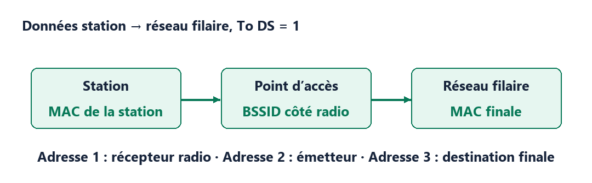

Comprendre le cours
1. Relier une station à un réseau Wi-Fi
Une station est un appareil équipé d’une interface Wi-Fi, par exemple ton téléphone. Le point d’accès, ou borne, la relie au réseau de distribution, souvent Ethernet. Le SSID est le nom que tu choisis dans la liste Wi-Fi. Le BSSID identifie la cellule radio à laquelle tu es connecté. Deux bornes de la fac peuvent afficher le même nom Eduroam et avoir chacune son BSSID.
Pour rejoindre un réseau, la station découvre des points d’accès par les balises ou en interrogeant les réseaux disponibles. Elle suit ensuite les échanges de gestion adaptés à la sécurité et s’associe. L’association radio et l’obtention d’une adresse IP sont deux vérifications différentes.
2. Comprendre pourquoi le canal compte
Plusieurs appareils partagent le même canal radio. Avec CSMA/CA, chaque appareil écoute le canal et attend son tour avant d’émettre pour réduire le risque de collision. Pour certaines transmissions vers un appareil précis, celui-ci confirme la réception en renvoyant un ACK, un accusé de réception. Deux appareils éloignés peuvent entendre la même borne sans s’entendre entre eux, ce qui peut causer des collisions à la borne.
Un canal définit une partie de spectre. Pour déployer un point d’accès, vérifie les canaux voisins, la largeur et la qualité reçue. Observe séparément un problème de portée, d’interférences et de charge. Une mesure proche du point d’accès sert de référence avant de te déplacer.
3. Lire les trames et leurs adresses
Les trames de gestion servent à organiser le réseau, comme les balises et l’association. Les trames de contrôle accompagnent l’accès au support, comme un ACK. Les trames de données peuvent transporter le trafic utile. Un en-tête Radiotap visible dans une capture décrit des métadonnées de réception selon le matériel et le pilote.

Lis To DS et From DS avant d’interpréter chaque case. Pour des données envoyées par un client vers le réseau de distribution, l’adresse 1 désigne le point d’accès récepteur, l’adresse 2 la station émettrice et l’adresse 3 la destination du trafic. Dans le sens inverse, l’adresse 2 devient le point d’accès émetteur et l’adresse 3 porte la source initiale.
4. Comprendre le pontage et la protection
Un bridge Linux transmet des trames de couche 2 entre interfaces. Le routage transmet des paquets entre réseaux IP. En test, vérifie d’abord si tu observes une trame sur le pont et une réponse du voisin. Si la destination doit être routée, vérifie le masque et le prochain saut.
La sécurité radio protège l’authentification et les échanges de données. La protection des trames de gestion peut aussi empêcher la falsification de certaines trames, notamment les désauthentifications quand cette protection a été négociée. En TP de capture, distingue une perte de liaison, une désassociation et un problème de service IP.
Sigles et acronymes
- ACK · Acknowledgment
- Acquittement de réception d’une trame Wi-Fi.
Exemple. Après une trame de données unicast, la borne peut confirmer sa réception avec une trame ACK. - ARP · Address Resolution Protocol
- Recherche de l’adresse MAC correspondant à une IPv4 locale.
Exemple. Pour joindre sa passerelle IPv4, le PC demande quelle adresse MAC lui correspond. - BSSID · Basic Service Set Identifier
- Identifiant d’une cellule Wi-Fi.
Exemple. Deux bornes du même Wi-Fi peuvent avoir le même SSID et des BSSID différents. - CSMA/CA · Carrier Sense Multiple Access with Collision Avoidance
- Partage d’un canal avec écoute et attente avant émission.
Exemple. En Wi-Fi, une station écoute le canal et attend avant de transmettre. - DS · Distribution System
- Réseau de distribution auquel le point d’accès est relié.
Exemple. To DS indique qu’une trame part d’une station vers le réseau de distribution. - ICMP · Internet Control Message Protocol
- Protocole de messages de contrôle IP.
Exemple. Le ping envoie une requête Echo et attend une réponse Echo. - IP · Internet Protocol
- Protocole d’adressage et d’acheminement des paquets.
Exemple. Le routeur lit l’IP de destination pour choisir où envoyer le paquet. - IPv4 · Internet Protocol version 4
- Version d’IP à adresses de 32 bits.
Exemple. 192.168.20.1 est une adresse IPv4. - MAC · Media Access Control
- Identifiant de couche liaison d’une interface dans ce cours.
Exemple. Le switch utilise la MAC de destination pour envoyer une trame vers le bon port. - PMF · Protected Management Frames
- Protection de certaines trames de gestion Wi-Fi.
Exemple. Après sa négociation, une station peut refuser certaines trames de désauthentification non protégées. - RLAN · Radio Local Area Network
- Réseau local par liaison radio.
Exemple. Un téléphone rejoint le réseau local en se connectant à une borne. - SSID · Service Set Identifier
- Nom visible d’un réseau Wi-Fi.
Exemple. Eduroam est un exemple de SSID affiché par un téléphone.
Du cours aux TD et TP
Les questions sont retrouvées dans les comptes rendus TP8 et TP9. Les fichiers disponibles contiennent les réponses et détails des binômes. La page reprend les énoncés utiles et propose les contrôles à refaire en maquette.
Questions TD & TP
TP8 · Identifier le réseau associé et vérifier le ping
Énoncé. Configurer le sous-réseau 192.168.x.0/24 et le SSID TP-RT1-x du sujet, puis tester le point d’accès.
- Prends la valeur de
xattribuée au groupe. Fixe des adresses distinctes dans le sous-réseau du TP. Rentre le SSID demandé dans la maquette et connecte le poste à ce réseau. - Vérifie le SSID et le BSSID du lien établi avec les informations de la carte. Contrôle ensuite adresse et masque. Si le client est connecté au bon SSID sans IPv4 correcte, traite d’abord l’adressage.
- Fais le ping de l’adresse de gestion du point d’accès. Compare une capture d’ARP et une capture d’ICMP pour expliquer l’ordre des messages.
TP8 · Suivre une trame à travers un bridge Linux
Énoncé. Configurer les deux interfaces prévues en pont et identifier les adresses qui apparaissent dans la capture du pont.
- Dans la maquette dédiée, relève les interfaces et vérifie leur état. Une fois la configuration faite,
bridge linkdoit montrer les interfaces membres du pont. - Lance le ping demandé et filtre ARP puis ICMP. Note la MAC de destination de la demande ARP et celle de la trame qui transporte le ping.
- Pour ce chemin de niveau 2, explique pourquoi le pont fait circuler la trame vers le bon côté. Compare ensuite avec l’échange qui devrait passer par une passerelle pour joindre un autre sous-réseau.
TP9 · Classer les trames et décoder les champs d’adresses
Énoncé. Relever des trames de gestion, de contrôle et de données, puis expliquer les adresses addr1, addr2 et addr3.
- Utilise la capture du réseau de test. Repère une balise, un ACK et une trame de données. Pour chacune, note le type et le sous-type affichés.
- Sur les données envoyées vers le point d’accès, lis les bits DS. Associe chaque adresse à un rôle du schéma. Ouvre ensuite une réponse et regarde les rôles qui ont changé.
- Pour une trame de désauthentification observée dans le TP, vérifie son type, sa direction et la protection négociée. Compare ce que la capture montre à ce qui est arrivé à la station.